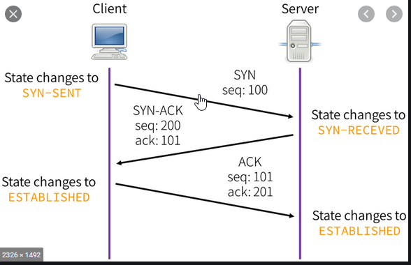

TCP vs UDP
-TCP is connection oriented - UDP is connectionless
- website (http/ https) - streaming service
- SSH - DNS
- FTP - Voice over IP
-----------------------------------------------------------------------------------------------------------------------------------------------------

----------------------------------------------------------------------------------------------------------------------------------------------------------------